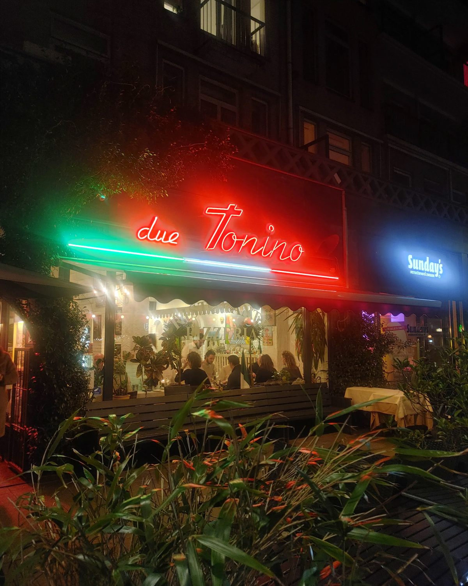

Due Tonino — mijn nummer één restauranttip in Rotterdam

Als ik mensen van buiten Rotterdam één restauranttip mag geven, is het altijd deze. En dat terwijl mijn favorietenlijstje echt lang genoeg is. Maar wil je een keer ongecompliceerd lekker uit eten bij een échte Italiaan, waar alles precies is wat je verwacht? Italiaans personeel, drukte in de keuken, drukte in de bediening, top eten, heerlijke drankjes en een geweldige sfeer. Dan moet je bij Due Tonino aan de Goudsesingel zijn.
De naam betekent letterlijk “twee Tonino’s” — de zaak werd in 1991 geopend door twee oprichters die toevallig dezelfde naam deelden. Al meer dan dertig jaar een stukje Italië in ons mooie Rotterdam dus. 💚
Tegenwoordig zwaait Cosimo de scepter, en hij is een echte gastheer. Altijd een praatje aan tafel, en toen wij vertelden dat we naar Puglia op vakantie gingen, kregen we prachtige tips — het is dan ook zijn geboortestreek. De eerste keer dat we er waren maakte hij zomaar een split midden in de zaak. Later begreep ik het pas: voordat Cosimo het restaurant overnam, was hij professioneel danser bij onder andere het Scapino Ballet. Nooit saai dus.
En dan het eten. Eigenlijk is alles lekker, en er favorieten uithalen doet de rest tekort. Maar goed, ik doe het toch. Vooraf is Lo stuzzichino del cuoco, de antipastiplaat van de chef, altijd goed — en de kaasfondue is echt een aanrader. Ik heb inmiddels alle risotto’s van de kaart gehad, en mijn persoonlijke favoriet is de Risotto al nero di seppia: de zwarte risotto die zijn kleur dankt aan de inkt van de inktvis. Echt een smaakexplosie. Als echte vleesliefhebber is het lastig kiezen, maar onze all time favorites zijn de bekende klassiekers: Ossobuco en Tagliata. En na afloop kregen wij nog een heerlijke likeur van het huis aangeboden. Zo doe je dat.
Ik ben er geweest met mijn ouders, met vrienden, met mijn vriendin, met de kinderen — in elke samenstelling is het een ideaal avondje uit, met mooie eerlijke prijzen. We zijn er al zo vaak geweest en echt nog nooit teleurgesteld.
Nog even praktisch: Due Tonino is puur een dinerplek, de deuren gaan om 17:00 open en op maandag en dinsdag is de zaak gesloten. Reserveren is echt nodig, zeker in het weekend. In de zomer kun je ook buiten zitten.
Uit eten in Rotterdam en geen inspiratie? Hier nog nooit geweest? Niet twijfelen. Buongiorno zeggen bij Due Tonino, en na afloop met een volle buik arrivederci. Daar krijg je zeker geen spijt van.
Praktisch
Due Tonino, Goudsesingel 67 (centrum) — duetonino.nl. Alleen diner: open vanaf 17:00, maandag en dinsdag gesloten. Reserveren is echt nodig, zeker in het weekend; in de zomer kun je ook buiten zitten.
Iemand die dit moet weten?